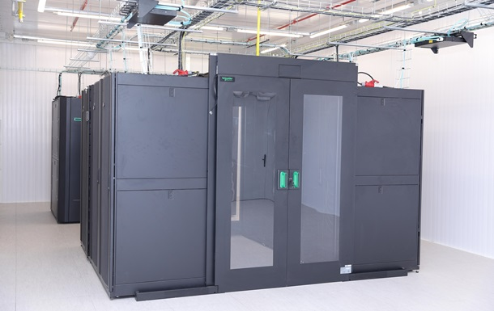

В минувшем году 184 тысячи украинских программиста обеспечили экспорт на 4,5 миллиарда долларов. По итогам 2018 года IT-индустрия в Украине заняла второе место по объему экспорта, продав заграницу продукции на 4,5 миллиарда долларов. Такие цифры озвучил СЕО инновационного парка UNIT.City Максим Яковер, сообщает Экономическая правда. По его данным 184 тысячи украинских программиста обеспечили экспорт на 4,5 миллиарда долларов. Для сравнения в 2017 году объем экспорта IT-индустрии составил 3,6 млрд дол или 3,4% ВВП страны. Также по состоянию на конец 2018 года 20% компаний - мировых лидеров в сфере разработки программного обеспечения для мобильных платформ - имели офисы в Украине. Также в стране работает четыре тысячи IT-компаний и более 110 R&D центров всемирно известных международных компаний. Ранее сообщалось, что компьютерные услуги в 2018 году составили более 20% от всех экспортируемых услуг. Вместе с тем, ITшники стремительно разъезжаются из Украины.
Пиковая производительность нового суперкомпьютера составляет 300 триллионов операций в секунду. Конструкторское бюро Южное в Днепре ввело в эксплуатацию новый вычислительный центр Yuzhnoye SC с самым мощным суперкомпьютером в Украине. Об этом сообщила пресс-служба КБ в четверг, 20 декабря. Отмечается, что уникальная компьютерная система разработана специально для решения инженерных и научных задач методами вычислительной физики в сотрудничестве с мировыми компаниями IT-сектора – MTI, Hewlett Packard Enterprise, APC, ANSYS. "Система суперкомпьютера состоит из сотни серверов и порядка 4 тысяч вычислительных ядер на процессорах новейшей архитектуры. Общий объем оперативной памяти – около 18 терабайт, для хранения данных доступно быстрое хранилище на 200 терабайт. Все компоненты суперкомпьютера объединены специализированной высокоскоростной компьютерной сетью. Система снабжена гибридными вычислительными серверами с новейшими графическими ускорителями и отдельными модулями для обработки и визуализации больших расчетных данных", – говорится в сообщении. Пиковая производительность суперкомпьютера составляет 300 терафлопс (300 триллионов операций в секунду), что сопоставимо с мощностью тысячи одновременно работающих персональных компьютеров. "Доступ к таким вычислительным ресурсам расширит возможности КБ "Южное" для реализации новых, нестандартных идей и еще более повысит научно-техническую конкурентоспособность предприятия", – отмечается в сообщении. В КБ уточнили, что реализовать проект удалось благодаря международным коммерческим контрактам, без привлечения средств госбюджета.
Физик и инженер Тим Бернерс-Ли, создавший World Wide Web, как мир свободы и равенства, разочарован нынешним положением дел и предлагает все изменить. Сегодня, 12 марта, исполняется 30 лет со дня появления Всемирной паутины (World Wide Web, WWW), которая положила начало интернет-коммуникации в том виде, какой мы ее знаем сейчас. Веб-паутина появилась в Европейской организации по ядерным исследованиям CERN, где запускают Большой адронный коллайдер, для обмена академическими документами. За десятилетия она кардинально трансформировалась, переросла в гораздо большее и теперь ее создатель Тим Бернерс-Ли предлагает все изменить.